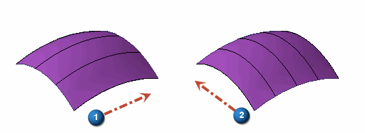
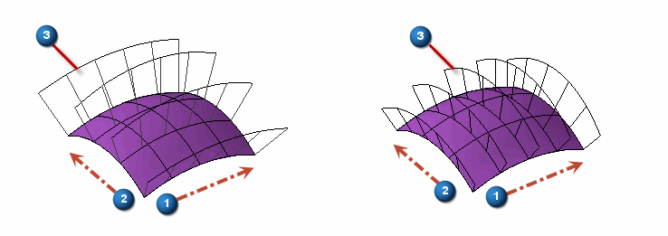

Surface Visualization command
Use the Surface Visualization command to display the UV Mesh and curvature combs on a selected surface as defined in the dialog settings box. The UV Mesh or Isoparameter curve mesh are lines running along the surface in the U and V directions, showing the shape of the surface. The curvature comb shows the smoothness of a curve on the surface.
The following illustration shows U direction labeled as 1 and V direction labeled as 2.

The following illustration shows the curvature combs labeled as 3 for direction 1 and 2 respectively.

How do I
Display zebra stripes on a partDisplay curvature shading on a model
Visualize a surface
Learn more
Evaluating surfacesEvaluating and repairing foreign data
Look up more details
Show Zebra Stripes commandZebra Stripes Settings command
Show Curvature Shading command
Curvature Shading Settings command
Curvature Shading Settings Dialog Box
Show Draft Face Analysis command
Draft Face Analysis command bar
Draft Face Analysis dialog box
Draft Face Analysis Settings command
Surface Visualization Settings dialog box